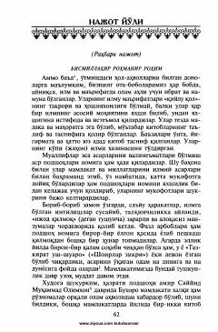

NYTurkiston xalqining ma'rifiy uyg'onishi va taraqqiyot yo'llariga bag'ishlangan muhim tarixiy asar.
Ushbu asar Turkiston xalqining ijtimoiy-siyosiy va madaniy hayotidagi tushkunlik sabablarini o'rganib, undan chiqish yo'llarini ilm-ma'rifat va din asosida tahlil qiladi. Muallif jamiyatni isloh qilish, ilm va taraqqiyotga intilish zarurligini dolzarb dalillar bilan yoritib beradi.